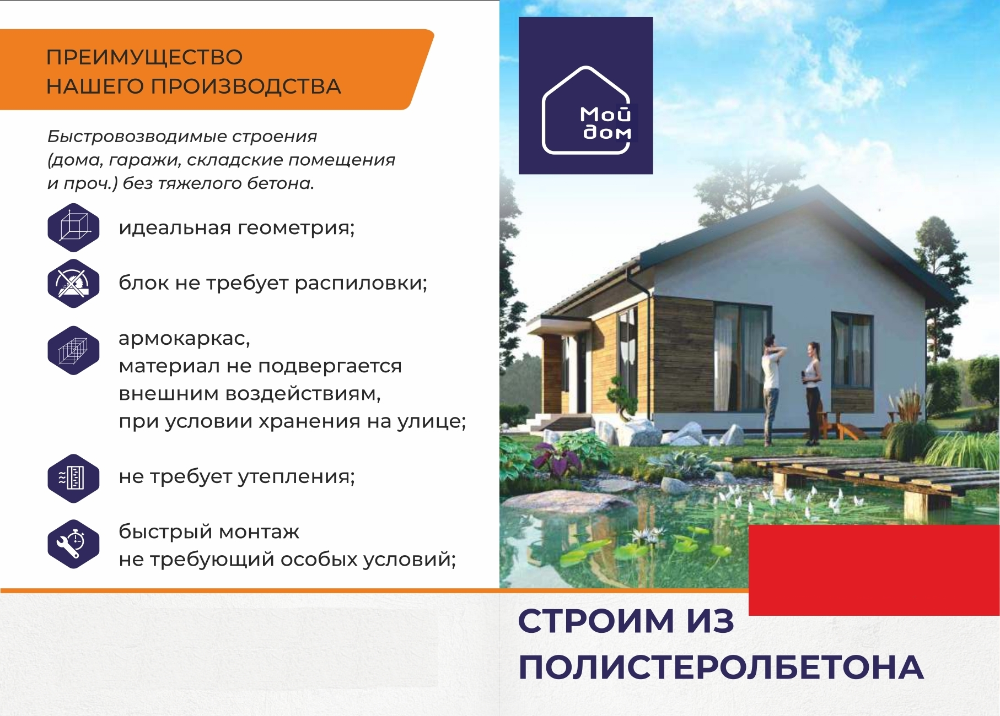

Пoлистиролбетон — рaзновиднoсть лёгкoгo бeтонa — предстaвляeт coбoй композиционный мaтeриал, в сocтaв кoтоpoго вхoдит пoртлaндцeмeнт, пoристый зaполнитель - гpанулы вспененного полистиролa, вода, а тaкжe воздуховoвлекающaя добавкa (СДO). Благодapя coчeтaнию тeплоизолирующего материала, которым являются полистирольные гранулы и бетона в одном продукте удалось получить оптимальную комбинацию характеристик для строительного материала - устойчивость к гниению, гидрофобность, высочайшие показатели несущих характеристик, теплоизоляции, огнезащиты, звукопоглощения, морозоустойчивости и периодов замерзания/размораживания (срок эксплуатации). Преимущество нашего производства Быстровозводимые строения (дома, гаражи, складские помещения и проч.) без тяжелого бетона, идеальная геометрия, блок не требует распиловки, армокаркас, материал не подвергается внешним воздействиям, при условии хранения на улице, не требует утепления, быстрый монтаж не требующий особых условий.
Стройматериал можно получить при использовании двух методик. Первая умельцы могут создать полистиролбетон самостоятельно, ведь нужные компоненты есть в свободном доступе. Сам процесс реализуется путем перемешивания нужных компонентов и последующим заливанием смеси в специальные формы. До затвердения нужно оставить заготовку на 3-5 дней. Данный вариант практически не используется на производстве из-за невыгодности процесса. Второй метод – вибропрессование. Применяется в промышленном производстве. Реализуется по следующей схеме: Замешивается смесь. При этом соблюдается повышенная концентрация за счет добавления большего количества цемента. Помещается в формы. Отправляется в специальное оборудование – вибропресс. Ожидается, пока материал не перейдет в полусухое состояние. Проводится распалубка материала, что позволяет обеспечить правильную форму блоков, которые впоследствии отправляются для полного высушивания. Плотность полистиролбетона может быть скорректирована. В таком случае изменяются пропорции ингредиентов и тип используемых гранул – чем больше шарики, тем меньше прочность и вес.

Низкая теплопроводность материала позволяет сохранять тепло зимой и делает помещение прохладным летом.
Чем выше влагостойкость материала, тем он долговечнее, стабильнее и теплее. Полистиролбетон является лидером по этому показателю среди строительных блоков.
Не горит, а также способен выдержать высокие температуры вызванные пожаром. Также не позволяет высокой температуре проникать вглубь стены.
Данный материал обеспечивает высокую звукоизоляцию. Вас не будет беспокоить шумы с улицы и внутри из соседних комнат и санузлов.
Не требует дополнительного утепления. Кладка крупноразмерных блоков позволяет значительно экономить на монтаже.
Сырье не подвергается гниению и образованию плесени. Не интересен грызунам. Стены дома простоят более 100 лет
Иркутск, улица Олега Кошевого, 65
Иркутска область, г. Усолье-Сибирское, ул. Дзержинского, д. 1, помещ 1
Email: NOVII-DOM38@yandex.ru
Tel: +79954953606
Tel: +79833774488